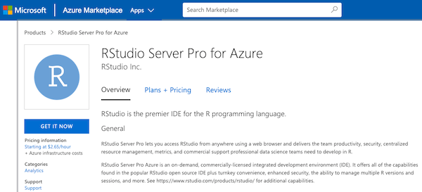

2019-01-08

RStudio is excited to announce the availability of its flagship, enterprise-ready, integrated development environment for R in Azure Marketplace.
RStudio Server Pro for Azure is an on-demand, commercially-licensed integrated development environment (IDE) for R on the Microsoft Azure Cloud. It offers all of the capabilities found in the popular RStudio open source IDE, plus turnkey convenience, enhanced security, the ability to manage multiple R versions and sessions, and more. It comes pre-configured with multiple versions of R, common systems libraries, and the most popular R packages.
RStudio Server Pro Azure helps you adapt to your unique circumstances. It allows you to choose different Azure computing instances whenever a project requires it, and helps avoid the sometimes complicated processes for procuring on-premises software.
If the enhanced security, elegant support for multiple R versions and multiple sessions, and commercially licensed and supported features of RStudio Server Pro appeal to you, consider RStudio Server Pro for Azure!
Read the FAQ Getting Started with RStudio Server Pro for Azure